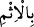
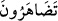
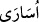
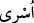
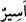
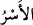

olduğu zaman haram olduğunu belirtmiştir. O zaman mânâ şudur: “Sırtlarınızı birbirinize
dayayarak onlara galebe etmek için kuvvetlendirirsiniz.” ( __WORD__ ) “bi’l-ismi” kelimesi ( __WORD__ ) “tezaherûne” fiilinin öznesinden haldir. Yâni; günahla iç içe geçmiş olarak,
demektir ki bu da sâhibini kınama ve zemmini gerektiren bir iştir. Ve bir de düşmanlıkta;
yâni zulümde haddi aşmak için sırt sırta verirsiniz. Bu âyet-i kerîme, zulmün haram
olduğunu belirttiği gibi, zâlime zulmünde yardımcı olmanın da haram olduğunu belirtir.
et-Tefsîrü’l-Kebîr’de böyle yazar.
“Size esîr olarak geldiklerinde” cümlesi esîr oldukları halde, size bu halde
göründüklerinde, demektir. Kendi irâdeleriyle geldiklerinde demek değildir.
( __WORD__ ) ve ( __WORD__ ) kelimeleri ( __WORD__ ) kelimesinin çoğullarıdır. “Esîr”; Zelîl düşerek
ele geçirilen kimseye denir. ( __WORD__ ) “ele geçirilmiş”, şeklinde mef’ûl mânâsına gelir.
“Kuvvetli, şiddetli ve bir şeyi bağlama” mânâlarına gelen ( __WORD__ ) kökündendir. Arada
şu kadar fark vardır ki, bunlar bir şeylerle bağlı olduklarında (üsârâ) olarak, bağlı
olmayıp dâimâ birisinin emri altında olurlarsa (üsrâ) olarak isimlendirirler.
“Onları, fidyelerini vererek esâretten kurtarmaya çalışırsınız.” “Tefâdî” fidyeyi
veren ile kabûl eden arasında cereyân eden bir şeydir. Oysa sizin onları çıkarmanız
haramdır. Cenâb-ı Hak, Tevrât’ta Benî İsrâîl’i birbirlerini öldürmemelerini, birbirlerini
yurtlarından çıkarmamalarını emretmişken, siz hangi köle ve câriyeyi, nereden buldunuz
da satın alıp serbest bıraktınız?
Kurayza ve Nadîr, kardeş iki Yahûdî topluluktu. Aynı şekilde Evs ve Hazrec kabîleleri
kardeş kabîlelerdi. İkinciler, müşrik olup putlara tapar, kıyâmeti, cennet ve cehennemi,
helâl ve haramı bilmezlerdi. Bunlar Şemir harbinde ayrılıp birbirlerine düşman oldular.
Benû Kurayza, Evs kabîlesinin yardımcısı ve müttefiki, Benû Nadîr ise, Hazrec’in
yardımcısı ve müttefikiydi. Evs ve Hazrec arasında bir savaş olduğunda Kurayza, Evs
tarafında; Nadîr de Hazrec tarafında harbe katılır ve her topluluk kendi kardeşlerine
karşı müttefiklerine savaşta yardım eder ve kendi kardeşlerinin kanını dökerdi. Biri
diğerine galip geldiğinde de onların yurtlarını harab eder ve ellerinde kendileri
hakkında herşeyi bildiren Tevrât olduğu halde, onları yurtlarından çıkarırlardı. Harp
durumunu sona erdiren anlaşma yapıldığında Kurayza, Hazrecliler’den kendi esîrlerini
fidyeyle alırdı. Nadîr de Evs’ten kendi esîrlerini fidye vererek alırdı. Araplar, bundan
dolayı bu iki kabîleyi ayıplayıp “Siz nasıl birbirinizi öldürüyor, sonra da fidye vererek
esîrlerinizi geri alıyorsunuz?” dediğinde cevap olarak: “Bize onları fidyeyle almamız
emrolundu, kardeşimizi öldürmek haramdır” diyorlardı. Araplar: “Ama siz
kardeşlerinizi de öldürüyorsunuz”, dediklerinde de: “Biz müttefiklerimizin mağlûb
olmasından alçaklık duyarız”, diyorlar ve gûyâ Arapları —kendi içlerinde tenâkuza
düşürerek— zemmediyorlardı. Mânâ özetle şöyle olmaktadır: Siz Allah’ın emrettiği
fidye hâriç herşeyden yüz mü çeviriyorsunuz? Çünkü Allah Teâlâ onlardan; katlden
vazgeçme, yurtdan sürmekten vazgeçme, birbirlerine karşı düşmanlarına yardımcı
olmamak ve esîrleri fidye ile kurtarmak hususlarında ahid almıştır. Onlar ise hepsini